All of Wikipedia. Nobody watching.
WikiMe is a reader for Wikipedia and nothing else. It talks only to Wikipedia's own servers, never shows a web address, and turns every article into a calm, beautiful page with a large photo, book-style type and a facts box you can actually read.
It is private from end to end: encrypted address lookups, an optional Tor switch, and saved articles, history and highlights encrypted on your phone. There is no account, no advert and nothing that tracks you.
Download for AndroidHow to install
- Version 1.0.0
- Android 10 or later
- 24.9 MB
Free, with nothing to unlock. No adverts, no account with the developer, no tracking. Compare or read the release notes.
Chrome may say the file might be harmful. It shows this for app files that do not come from Google Play. Choose Download anyway.
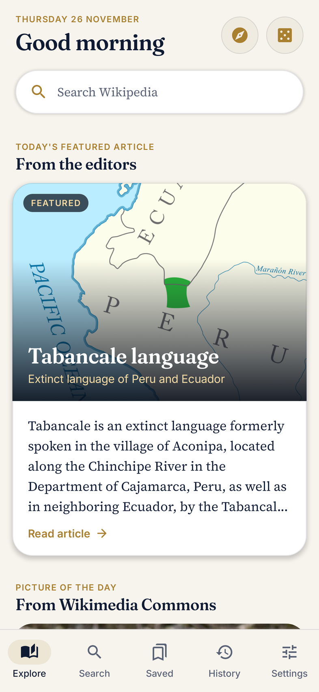
- Only WikipediaIt cannot reach any other site.
- No advertsNone in the app and none on this site.
- Nothing to buyEvery feature is free, with nothing locked.
- No accountNothing to sign up for.
A look inside
These are the real screens, drawn from the app's own code with today's Wikipedia. Swipe or scroll sideways to see them all.
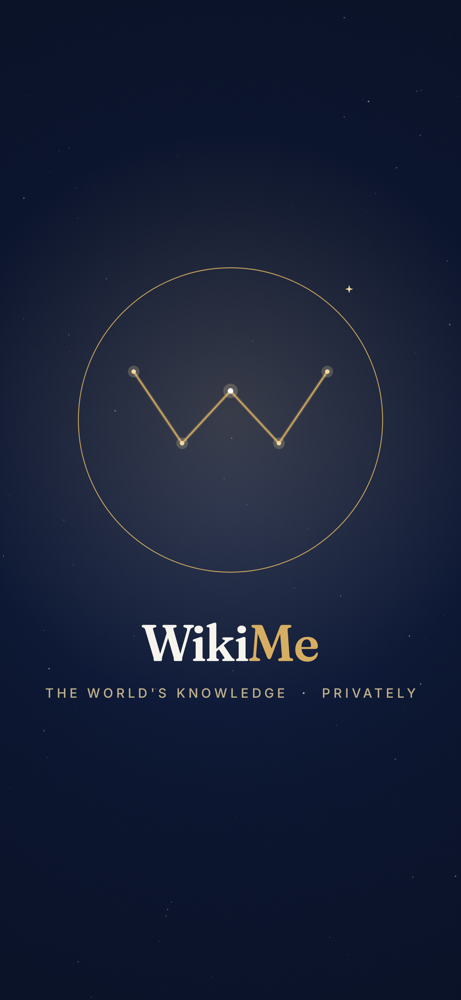
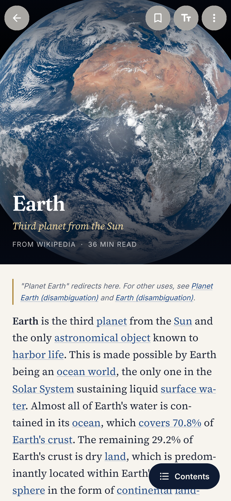
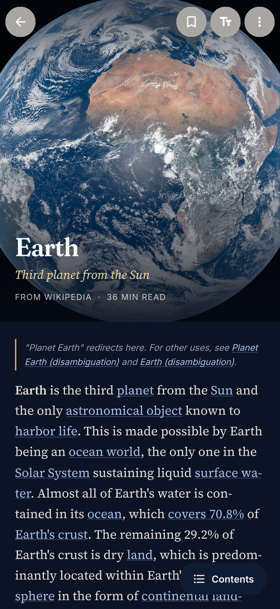
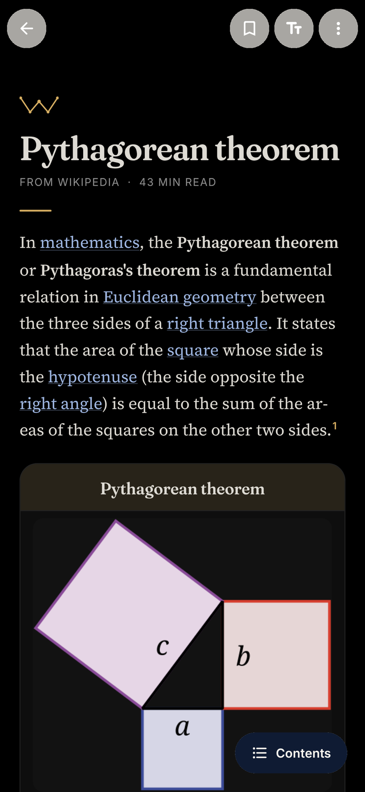
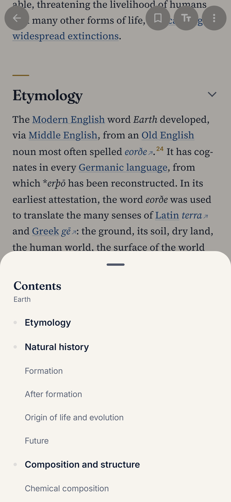
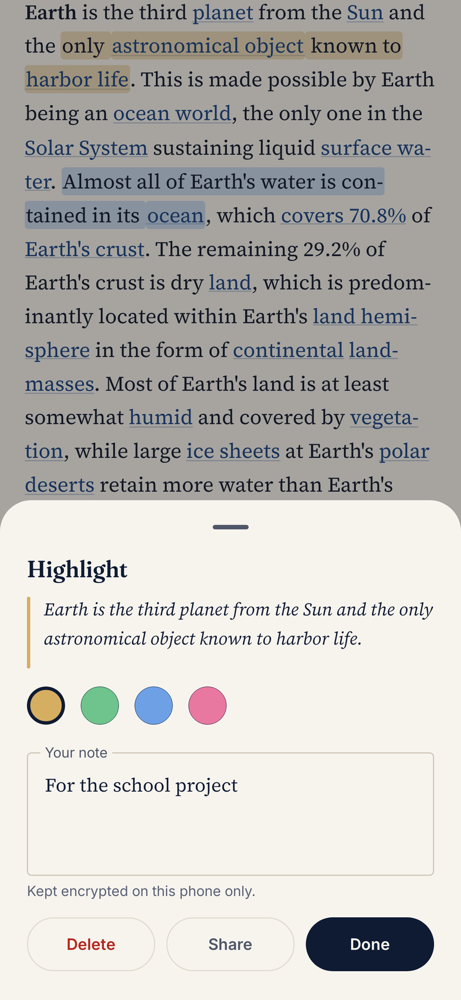
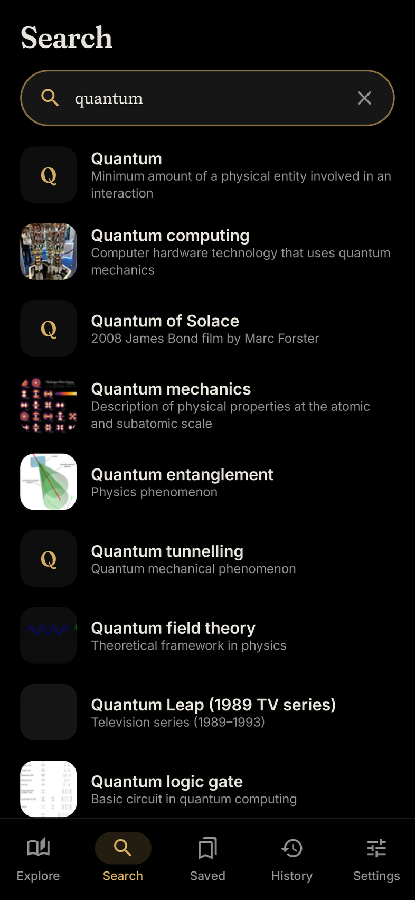
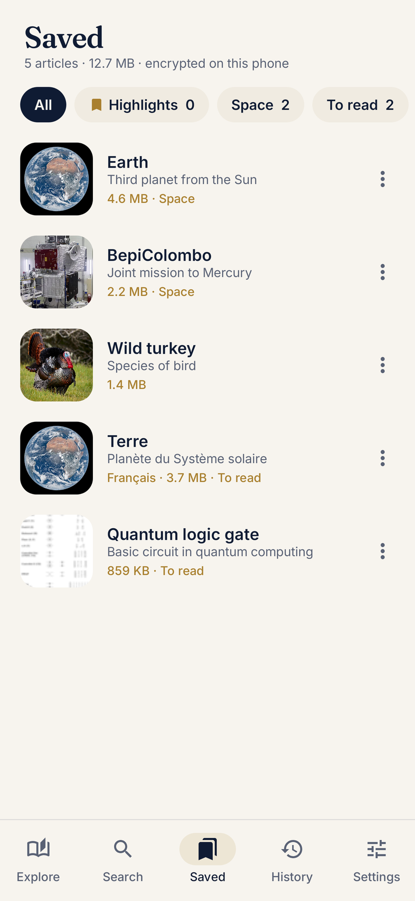
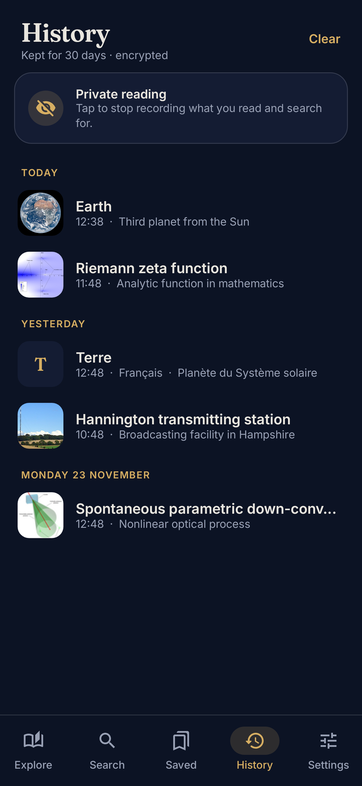
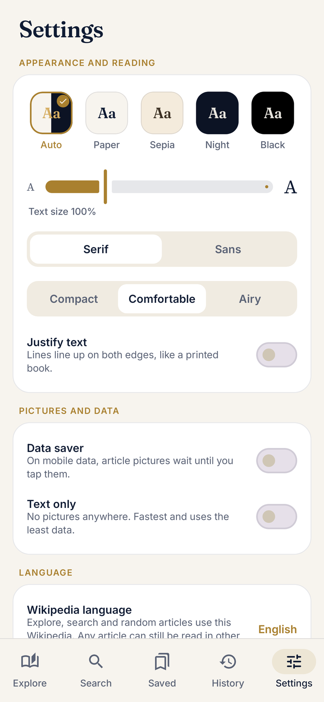
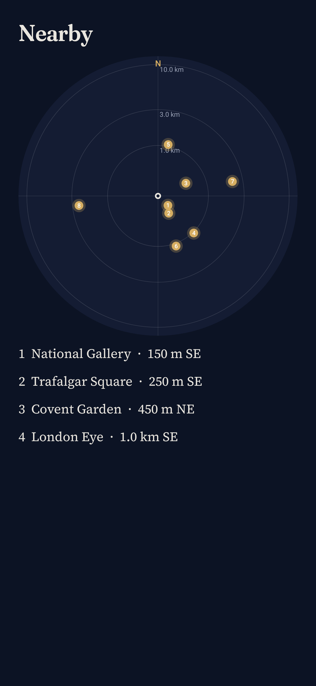
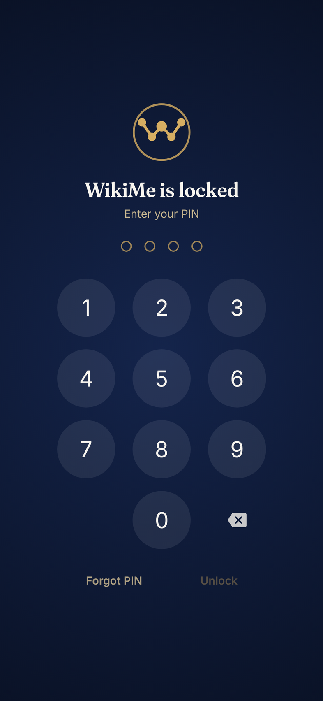
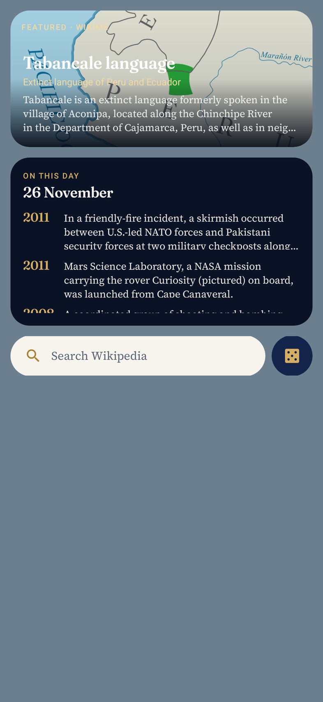
How it works
WikiMe fetches articles straight from Wikipedia and rebuilds each one on your phone, so nothing else ever loads.
Open it
Today's Wikipedia is waiting on Explore. Search, tap the dice for a random article, or shake the phone.
Read
Every article is rebuilt as a clean page: no web addresses, no Wikipedia scripts, nothing from anywhere else.
Keep it
Save an article with its pictures for reading offline, highlight the parts that matter, or have it read aloud.
Everything is in, and all of it is free
Nothing below is held back for a paid tier, because there is no paid tier.
Reading
- A page made for reading
- A large photo header, book-style serif type, the facts box as a tidy card and folding sections.
- Five themes
- Auto, Paper, Sepia, Night and Black, with text size, serif or sans, spacing and justify.
- Notes and previews
- Tap a note number for its source, long-press a link for a preview card, find in page.
- Read aloud
- Your phone's own offline voice reads the article, with lock-screen controls and speed.
Private by default
- Only Wikipedia
- Every other site is refused, three times over, and the connection is pinned to Wikipedia's certificates.
- Tor switch
- One switch sends everything through Tor. Nothing is sent until Tor has connected.
- Encrypted lookups
- Address lookups are encrypted, so the network cannot see which pages you read.
- No web addresses
- Links that leave Wikipedia ask first and show only the site's name.
Yours to keep
- Saved articles
- Kept with their pictures for reading with no signal, in reading lists you name.
- Highlights and notes
- Four colours and your own notes, all in one list.
- History your way
- Kept for a day, a week, 30 days, 90 days or always, or switch on private reading.
- All encrypted
- Saved articles, pictures, history and highlights are encrypted with a key held in the phone's secure hardware.
Everywhere
- 44 languages
- Any article in every language that has it, with right-to-left languages laid out properly.
- Nearby
- Articles about places around you, on a compass and a list. Off until you agree.
- Look up in WikiMe
- Select a word in any app and a summary card slides up.
- Widgets, lock and tablets
- Three home screen widgets, an app lock, screenshot blocking and a tablet layout.
Private by design
Only Wikipedia, ever
WikiMe cannot reach any site but Wikipedia's own. No adverts, analytics, crash reports or Google services.
Tor when you want it
Switch Tor on and every request goes through it, by name, so the phone never looks an address up itself.
Encrypted on the phone
Saved articles, pictures, history and highlights are encrypted with AES-256 and a key the phone will not let out.
Installing and updating
WikiMe is not on Google Play, so your phone asks a couple of extra questions the first time.
Download the app file
Tap Download on your phone. The file is called WikiMe.apk and is about 24.9 MB. If Chrome says the file might be harmful, choose Download anyway.
Allow the install
Open the file. The first time, Android asks you to allow your browser to install apps. Allow it, go back and tap Install. If Google Play Protect steps in, choose More details, then Install anyway.
Updating later
WikiMe only ever talks to Wikipedia, so it never checks for updates itself. Settings, Check for a newer version opens the release notes in your browser. Install the new file over the old one and your saved articles, history and settings are kept.
Version 1.0.0, released 26 November 2026. See the release notes, or check your download.
Questions
Is WikiMe really free?
Yes. There is no paid version, no subscription and no adverts, and nothing in the app is locked.
Is it made by Wikipedia?
No. WikiMe is an independent app that reads Wikipedia. The articles are written by Wikipedia's volunteers and shared under Wikipedia's own licence, which WikiMe credits on every article and when you share.
Is it on Google Play?
No. WikiMe is a personal project and is downloaded from this site as an Android app file. It needs Android 10 or later.
Why does it never show web addresses?
So it reads like a book, not a browser. Links inside Wikipedia open in WikiMe. A link to any other site asks first, shows only the site's name, and opens in your phone's own browser.
What does the Tor switch do?
When it is on, every request goes through the Tor network, so Wikipedia and your network cannot link what you read to you. It is off by default because Tor is slower. While Tor is connecting, nothing is sent at all.
Can I read without a signal?
Yes. Tap the bookmark on any article to save it with its pictures. Saved articles open with no connection, and can be updated whenever you like.
What does Nearby send?
Only when you ask, and only after you agree: your approximate position, rounded to about a kilometre, is sent once to Wikipedia to find articles about places nearby. It is never stored.
Can I edit Wikipedia with it?
No. WikiMe is for reading. It has no account and no sign-in, so there is nothing that can be linked to you.
Does it work on an iPhone?
No. WikiMe is for Android phones and tablets only.
Who made it?
WikiMe is made by Jonathan Jackson, an independent developer in the United Kingdom.
Read Wikipedia in private
Free, with no adverts and nothing to unlock. Made by the developer of several other free Android apps: see them all.